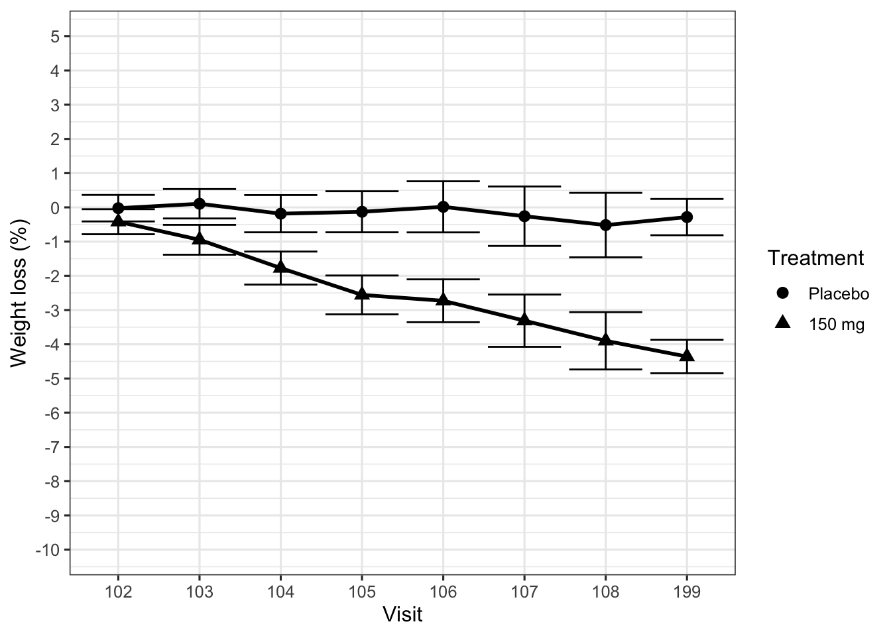
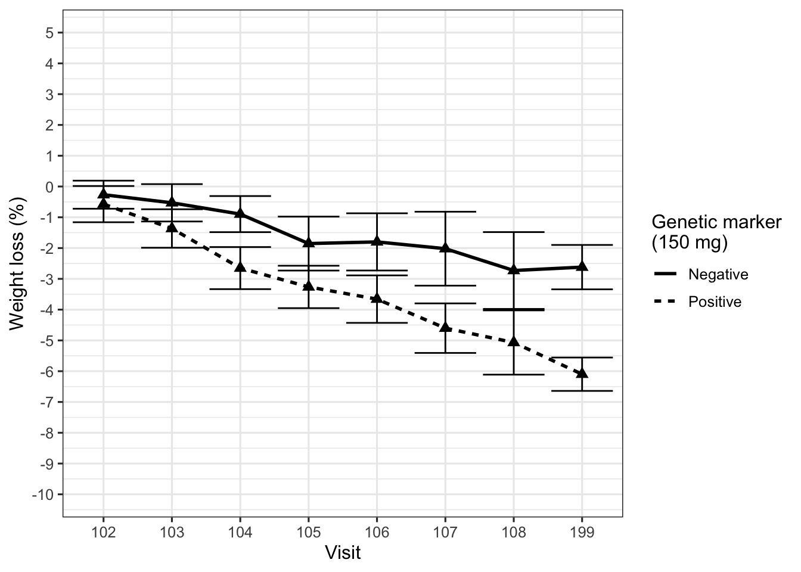
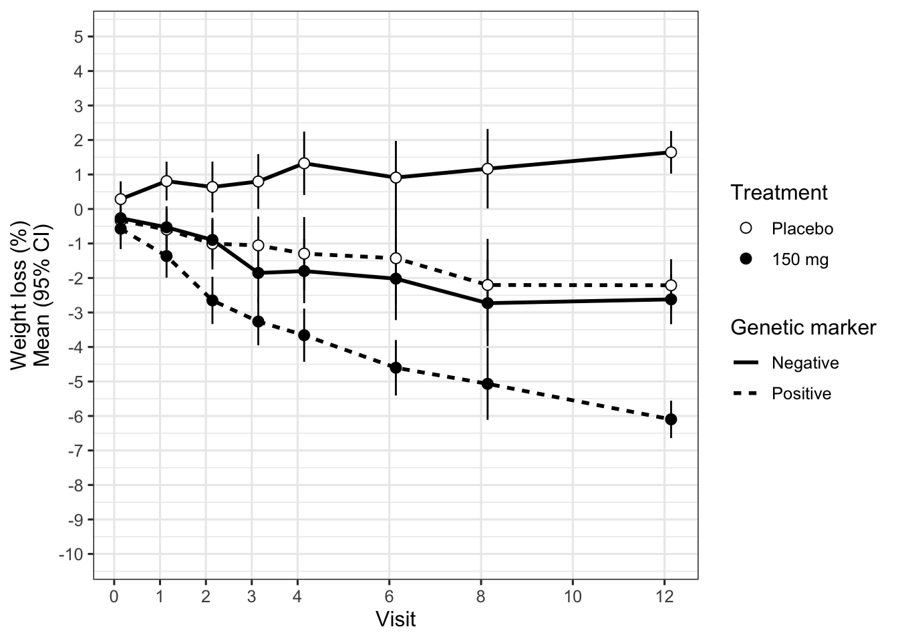

# Read in data and define order for factors.
# Dervie visit time in weeks from hours
# Define informative label for plotting subgroups
my_data <- read.csv("../../data/PKPDdataset2.csv") %>%
filter(CMT == 3 & DOSE %in% c(0, 150) & PART == 1 & STUDY == 1) %>%
mutate(
TRTACT = factor(TRTACT, levels = unique(TRTACT[order(DOSE)])),
Treatment = factor(TRTACT, levels = levels(TRTACT)),
Visit = factor(
plyr::mapvalues(
round(NOMTIME),
sort(unique(round(NOMTIME))),
c(101,102,103,104,105,106,107,108,199))
),
NOMTIME = NOMTIME/24/7,
Biomarker = ifelse(subgroup == 0, "Negative", "Positive")
)
## Obtain baseline measurement
base_data <-
my_data %>%
filter(PROFDAY == 0) %>%
mutate(BASE = LIDV) %>%
select(ID, BASE)
## Derive change and percent change from baseline
data_to_plot <-
my_data %>%
filter(PROFDAY != 0) %>%
left_join(base_data) %>%
mutate(
CHG = LIDV - BASE,
PCHG = 100 * (LIDV - BASE)/LIDV
) Post-hoc subgroup analyses
case studies
example code
The importance of clarifying the purpose.
Post-hoc exploratory subgroup analyses are common especially after borderline or failed clinical trials (Wang et al. 2007). Often the objective of such analyses is to understand why the study failed, or to identify a subgroup of patients who did show sufficient response to the treatment (Ruberg and Shen 2015; Lipkovich, Dmitrienko, and B. D’Agostino Sr. 2017) In this fourth case study we illustrate the challenge of navigating this type of analysis. The objective is to present to decision-makers a recommendation whether or not to proceed with further investigation of a genetic marker that may be predictive of response to treatment.
Figure 1 displays the desired effect, percentage body weight loss from baseline, for an active treatment and a placebo control arm. The primary endpoint is 12 weeks after randomization. Although the active treatment reduced body weight, the average extent of the effect was not considered clinically meaningful. However, the team found a subgroup of patients identified by a biologically plausible genetic marker who appeared to benefit more strongly from the compound, as shown in Figure 2.
data_to_plot %>%
ggplot(aes(x = Visit,
y = PCHG,
group = Treatment,
shape = Treatment,
fill = Treatment)
) +
theme_bw(base_size = 12) +
stat_summary(fun.data = "mean_cl_normal", geom = "errorbar") +
stat_summary(geom = "line", size = 1, fun.y = mean) +
stat_summary(geom = "point", size = 2.5, fun.y = mean, stroke = 1) +
scale_y_continuous(breaks = seq(-20,20,1)) +
coord_cartesian(ylim = (c(-10, 5))) +
labs(x = "Visit", y = "Weight loss (%)")
At this point we need to intervene. Already the first plot did not show the data clearly (Law 2), using barely distinguishable plot symbols and huge ticks at the end of the error bars, too many ticks on the y-axis, and – worst offense – visit numbers on the x-axis (equally spaced!). The second plot, in addition, is fundamentally flawed, because it displays the wrong comparison (Law 1, wrong scientific question). The treatment effect in this trial is weight loss under active treatment compared to weight loss under placebo, and this subgroup analysis removes the placebo arm completely.
data_to_plot %>%
filter(DOSE > 0) %>%
ggplot(aes(x = Visit,
y = PCHG,
group = Biomarker
)
) +
theme_bw(base_size = 12) +
stat_summary(fun.data = "mean_cl_normal", geom = "errorbar") +
stat_summary(fun.y = mean, geom = "line",
aes(linetype = Biomarker), size = 1) +
stat_summary(fun.y = mean, geom = "point", size = 2.5, shape = 17) +
scale_y_continuous(breaks = seq(-20,20,1)) +
coord_cartesian(ylim = (c(-10, 5))) +
labs(x = "Visit",
y = "Weight loss (%)",
linetype = "Genetic marker\n(150 mg)") 
data_to_plot %>%
ggplot(aes(x = NOMTIME,
y = PCHG,
group = interaction(Biomarker,Treatment),
fill = Treatment
)
) +
theme_bw(base_size = 12) +
stat_summary(fun.data = "mean_cl_normal", geom = "errorbar", width = 0) +
stat_summary(fun.y = mean, geom = "line",
aes(linetype = Biomarker), size = 1) +
stat_summary(fun.y = mean, geom = "point", size = 2.5, shape = 21) +
scale_fill_manual(values = c("white", "black")) +
scale_y_continuous(breaks = seq(-20,20,1)) +
scale_x_continuous(breaks = c(0,1,2,3,4,6,8,10,12), minor_breaks = NULL) +
coord_cartesian(ylim = (c(-10, 5))) +
labs(x = "Visit",
y = "Weight loss (%)\nMean (95% CI)",
linetype = "Genetic marker") 
data_to_plot <- data_to_plot %>%
mutate(
subgroup = factor(subgroup)
)
m2 <- lmer(LIDV ~ BASE + Visit + Treatment + subgroup +
BASE*Visit +
Treatment*Visit +
subgroup*Treatment +
subgroup*Visit +
subgroup*Visit*Treatment + (Visit | ID), data_to_plot)
# Comparison by each time-point * subgroup
ests <- emmeans(m2, pairwise ~ Treatment | Visit * subgroup)
# Obtain visit labels and mapping to nomtime
vis_dat <- data_to_plot %>%
select(Visit, NOMTIME) %>%
unique()
# Transform estimates in to data frame
# Derive subgroup label
# Reverse direction of trt comparison i.e. trt - pbo
# Derive week for displaying subgroups clearly
# Add visit labels on to data frame
emm1df <- as.data.frame(ests$contrasts) %>%
mutate(Visit = contrasts.Visit,
subgroup = ifelse(contrasts.subgroup == 0, "Negative", "Positive"),
y = -1*contrasts.estimate
) %>%
left_join(vis_dat) %>%
mutate(
Visit = contrasts.Visit,
Week = ifelse(subgroup == "Positive", NOMTIME - 0.15, NOMTIME + 0.05 )
)## Take out the baseline visit
emm1df %>%
filter(contrasts.Visit != 101) %>%
left_join(vis_dat) %>%
ggplot(aes(x = NOMTIME,
y = y,
group = interaction(subgroup, contrasts.contrast))) +
theme_bw(base_size = 8) +
geom_line(size = 1, aes(linetype = subgroup)) +
geom_pointrange(aes(ymean = y,
ymin = y - 1.96 * contrasts.SE,
ymax = y + 1.96 * contrasts.SE),
size = 1) +
scale_x_continuous(breaks = seq(0, 14 , 1)) +
scale_y_continuous(breaks = seq(-10, 10 , 1),
limits = c(-10, 10)) +
labs(x = "Week",
y = "Placebo-subtracted weight loss (%)\nMean (95% CI)",
linetype = "Genetic marker") pos <- emm1df %>%
filter(contrasts.Visit != 101 & subgroup == "Negative")
emm1df %>%
filter(contrasts.Visit != 101 & subgroup != "Negative") %>%
ggplot(aes(x = Week,
y = y,
group = contrasts.contrast)) +
geom_hline(yintercept = 0, size = 0.2, color = "black") +
geom_line(alpha = 0.1, color = "black") +
geom_pointrange(aes(ymean = y,
ymin = y - 1.96 * contrasts.SE,
ymax = y + 1.96 * contrasts.SE),
alpha = 0.7, color = "black", size = 0.25) +
geom_line(data = pos, alpha = 0.1, color = "#c0392b") +
geom_pointrange(data = pos,
aes(
ymean = y,
ymin = y - 1.96 * contrasts.SE,
ymax = y + 1.96 * contrasts.SE),
alpha = 0.7, color = "#c0392b", size = 0.25) +
scale_x_continuous(breaks = c(0, 4, 8, 12)) +
scale_y_continuous(breaks = c(0,-2.5, -5)) +
labs(x = "Week",
y = "",
title = "Placebo-subtracted weight loss (kg)") +
paper_theme() Let us put the placebo group back in, and at the same time improve the various graphical shortcomings of the plot (using appropriately spaced times on the x-axis, distinguishable plot symbols etc.). We obtain Figure 10C which displays the treatment-by-subgroup interaction over time (and clarifies that the error bars are 95% confidence intervals). Interestingly, we see some weight loss also in the biomarker-positive placebo group, and weight gain in the biomarker-negative placebo group. The treatment effect (active drug vs. placebo) is similar within each biomarker group. In other words, the biomarker appears prognostic for weight loss (at least under the conditions of this clinical trial which may include dietary or exercise advice), but not predictive for a treatment effect. Figure 4 displays the treatment effect directly, to make it obvious that it is the same irrespective of the genetic marker (Law 3).
To complete our objective, we should present these results and our recommendation about the genetic marker to decision-makers. We need to show the results clearly and make the message obvious. In this context, the message is that the genetic marker is not predictive for a treatment effect; whether it is prognostic for weight loss is less important. Figure 10D supports our message most succinctly. Based on this figure, we finally craft a messaging slide that is suited for conveying this message in a meeting to a group of executives within seconds.
Figure 10E shows this final slide. Guided by Laws 2 and 3, we arrived at this slide by considering the following principles and recommendations.
Facilitate comparisons. We zoom in on the comparison of interest by appropriately restricting the y-axis. A reference line at zero indicates the position of no treatment effect, and a labelled arrow shows the direction of treatment benefit.
Reduce cognitive load. We use direct labelling instead of a legend to identify the two subgroups. We select clearly distinguishable colors that also carry through to the subgroup labels.
Adapt to your audience. We avoid writing the y-axis label vertically, by placing it above the plot and using it as its title. This is to prevent the audience from straining to read information during the meeting. We spell out that this is a treatment comparison (a difference) in terms of weight loss. We also reduce the size of the symbols representing the point estimates, to avoid the audience focusing too much on these and too little on the uncertainty intervals.
Remove non-data ink. We reduce the number of ticks and points displayed on the x- and y-axes. They do not convey useful information for a short presentation, as we do not expect the audience to extract exact values. The connecting lines are pushed to the background by introducing a degree of transparency.
Effective redundancy. We add a caption that spells out what is seen at week 12 (the primary endpoint), and we highlight the corresponding treatment effect estimates by an enclosing circle (a powerful grouping technique to draw attention). Finally, we place the main message directly as the title of the slide (setting the most important word, “not”, in bold), and as subtitle we explicitly put our recommendation: “Genetic marker does not warrant further investigation.”
sessionInfo()## R version 4.3.0 (2023-04-21)
## Platform: aarch64-apple-darwin20 (64-bit)
## Running under: macOS Ventura 13.6.3
##
## Matrix products: default
## BLAS: /Library/Frameworks/R.framework/Versions/4.3-arm64/Resources/lib/libRblas.0.dylib
## LAPACK: /Library/Frameworks/R.framework/Versions/4.3-arm64/Resources/lib/libRlapack.dylib; LAPACK version 3.11.0
##
## locale:
## [1] en_US.UTF-8/en_US.UTF-8/en_US.UTF-8/C/en_US.UTF-8/en_US.UTF-8
##
## time zone: Europe/Zurich
## tzcode source: internal
##
## attached base packages:
## [1] stats graphics grDevices utils datasets
## [6] methods base
##
## other attached packages:
## [1] emmeans_1.8.9 lme4_1.1-33
## [3] Matrix_1.5-4 data.table_1.14.8
## [5] RColorBrewer_1.1-3 lubridate_1.9.2
## [7] forcats_1.0.0 stringr_1.5.0
## [9] dplyr_1.1.2 purrr_1.0.1
## [11] readr_2.1.4 tidyr_1.3.0
## [13] tibble_3.2.1 ggplot2_3.4.2
## [15] tidyverse_2.0.0 Hmisc_5.1-0
##
## loaded via a namespace (and not attached):
## [1] gtable_0.3.3 xfun_0.39
## [3] htmlwidgets_1.6.2 lattice_0.21-8
## [5] tzdb_0.4.0 vctrs_0.6.2
## [7] tools_4.3.0 generics_0.1.3
## [9] sandwich_3.0-2 fansi_1.0.4
## [11] cluster_2.1.4 pkgconfig_2.0.3
## [13] checkmate_2.2.0 lifecycle_1.0.3
## [15] farver_2.1.1 compiler_4.3.0
## [17] munsell_0.5.0 codetools_0.2-19
## [19] htmltools_0.5.5 yaml_2.3.7
## [21] htmlTable_2.4.1 Formula_1.2-5
## [23] pillar_1.9.0 nloptr_2.0.3
## [25] MASS_7.3-58.4 multcomp_1.4-25
## [27] rpart_4.1.19 boot_1.3-28.1
## [29] nlme_3.1-162 tidyselect_1.2.0
## [31] digest_0.6.31 mvtnorm_1.2-2
## [33] stringi_1.7.12 splines_4.3.0
## [35] fastmap_1.1.1 grid_4.3.0
## [37] colorspace_2.1-0 cli_3.6.1
## [39] magrittr_2.0.3 base64enc_0.1-3
## [41] survival_3.5-5 utf8_1.2.3
## [43] TH.data_1.1-2 foreign_0.8-84
## [45] withr_2.5.0 scales_1.2.1
## [47] backports_1.4.1 estimability_1.4.1
## [49] timechange_0.2.0 rmarkdown_2.22
## [51] nnet_7.3-18 gridExtra_2.3
## [53] zoo_1.8-12 hms_1.1.3
## [55] coda_0.19-4 evaluate_0.21
## [57] knitr_1.43 rlang_1.1.1
## [59] Rcpp_1.0.10 xtable_1.8-4
## [61] glue_1.6.2 rstudioapi_0.14
## [63] minqa_1.2.5 jsonlite_1.8.4
## [65] plyr_1.8.8 R6_2.5.1References
Lipkovich, Ilya, Alex Dmitrienko, and Ralph B. D’Agostino Sr. 2017. “Tutorial in Biostatistics: Data-Driven Subgroup Identification and Analysis in Clinical Trials.” Statistics in Medicine 36 (1): 136–96. https://doi.org/10.1002/sim.7064.
Ruberg, Stephen J., and Lei Shen. 2015. “Personalized Medicine: Four Perspectives of Tailored Medicine.” Statistics in Biopharmaceutical Research 7 (3): 214–29. https://doi.org/10.1080/19466315.2015.1059354.
Wang, Rui, Stephen W. Lagakos, James H. Ware, David J. Hunter, and Jeffrey M. Drazen. 2007. “Statistics in Medicine - Reporting of Subgroup Analyses in Clinical Trials.” New England Journal of Medicine 357 (21): 2189–94. https://doi.org/10.1056/NEJMsr077003.